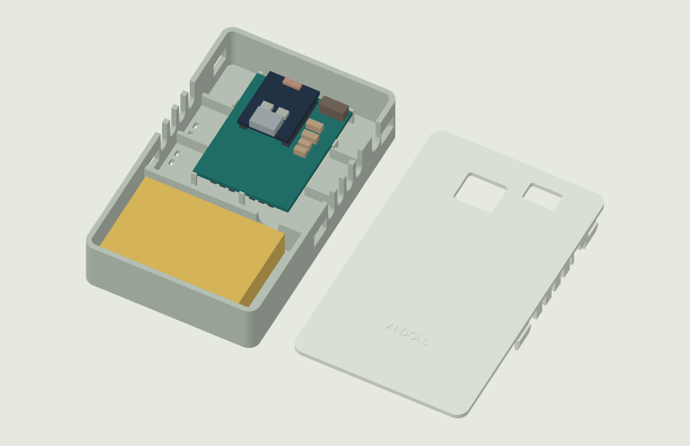
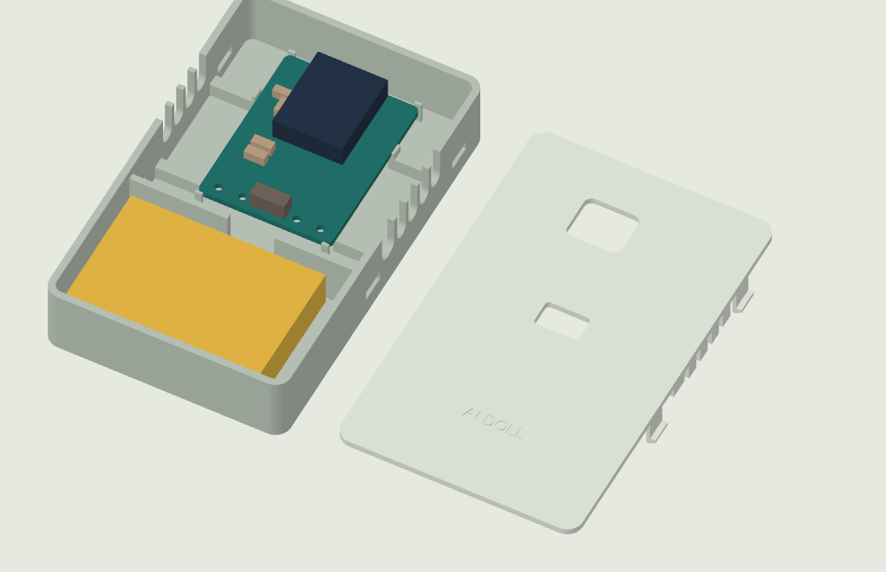
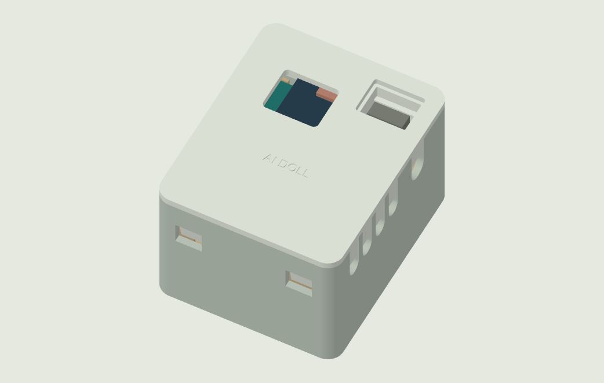

AI DOLL / ENCLOSURE / 2026.10.20
打印候选 · 待实物试装卡扣上盖，留出电池的位置
平铺与堆叠两种结构 · 103450电池 · 指示灯观察窗
平铺两件 / 堆叠三件电池名义 50 × 34 × 10 mm预留净空 52 × 36 × 12 mm盖板四点卡扣出线端余量 7.2 mm



黄色是电池装配参考，不要打印。平铺版打印底盒与上盖；堆叠版另需绝缘载架。两种主板的线槽、开关和板边支承不同，不能混用。指示灯窗口位置有预留余量，精确对位与卡扣松紧仍需用实物确认。